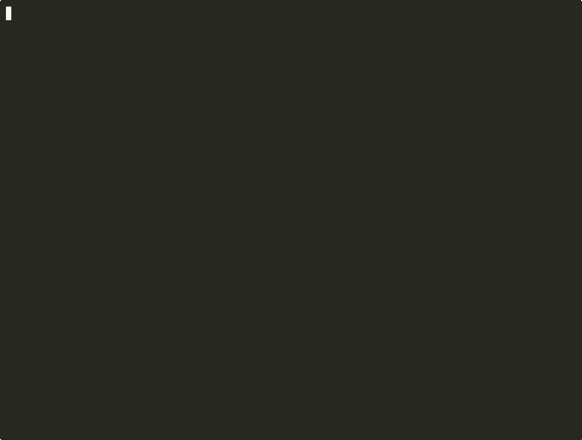

skillgrab scans your codebase, detects your stack — frontend, backend, mobile, marketing, design — and installs matching skills from skills.sh. No setup.
npx skillgrab
built by Ismael Briasco · @briascoi

Run it inside any project directory.
Reads package.json, requirements.txt, pubspec.yaml, Gemfile, go.mod, Dockerfile, and your README to understand what you're building.
Queries skills.sh live for each detected signal. Picks up non-code needs too — marketing, design, SEO, sales — and confirms with you.
Runs npx skills add for every matching package. Use --dry-run to preview first.
$ npx skillgrab --dry-run skillgrab v0.1.0 scan your project → install matching skills from skills.sh ▸ Tech signals next.js package.json → next tailwind package.json → tailwindcss supabase package.json → @supabase/supabase-js stripe package.json → stripe vercel vercel.json present ▸ Context hints (from README/docs) marketing matches: landing page, launch, pricing seo matches: seo ▸ Install plan vercel-labs/agent-skills ← next.js supabase/skills ← supabase stripe/skills ← stripe growth/skills ← marketing --dry-run: not installing.
Frontend, backend, mobile, infra, and the non-code work around it.
One command. The right tools for your project, installed.
npx skillgrab